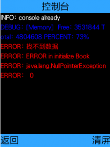

写在前面
这是一个JavaMe的通用轻量级Logger系统和控制台程序，轻击这里下载logger源码，把它拉到你的项目里面去便可，要看下例子可以再轻击这里，还有效果图在这。
正文
OK，正文了。我写Java Me程序的时候很多次程序都是自我感觉良好在模拟器上跑起来也没问题，但一到真机就卡壳了。而且，在真机上跑又不像在电脑上开发一样有个控制台可以打印信息，有时要在真机上获得一系列错误信息那是相当麻烦。我曾经试过，调用InputStream的read(byte[]b,int offset,int len)方法,居然可以最后一字节没被读出来；用new String(byte[] b , “gb2312”)来转换编码时，居然最后一个字节会丢失；还有用Connector来得到FileConnection时，如果将模式设置为「只读」直接程序崩溃，等等，好多。真是苦不堪言。恩，好吧，我承认我的机器是MTK系统滴。如果说ME程序员是IT民工中的搬运工，那么给MTK写ME程序的就是那枚扮演烈日下搬砖头的角色。所以说如果能有一个通用的控制台程序那就显得相当有用了，简直就是给ME程序员穿上滑轮鞋。
恰好，近日在看Fire2[^[1]^](#fire2)时，里面刚好有个控制台，还有个日志系统。不过Fire2的控制台是基于它自己的UI控件的，不具备通用性，而且效率不行，打印信息一多严重拖慢系统程序。于是我自己用Canvas重新实现了控制台，并将Fire2中的日志系统提取出来做了点修改，跟我的控制台打包成一通用的日志系统logger包。
该日志系统有三个类一个接口组成。
Log是在Fire2里实现好的，有一系列的静态方法，包括添加和设置Logger，还有一系列记录消息的方法，Log里面的消息四个级别，分别为Info、Warn、ERROR、Debug。Log对象默认实现一个Logger，这个默认的Logger就是将消息打印在控制台(System.out.println())。
Logger 是一个接口只有一个方法
public void println(String txt , int level);
要自己实现logger只需实现这个接口便可，比如说把Log消息写文件里面去，发送到服务器等等。
Console就是控制台，是一个独立的全屏的界面，继承了Canvas，实现了Logger接口。将Log记录下来的消息绘制到屏幕上。考虑到一个Midlet只需要一控制台，又必须给Console传入Display参数，所以便按单例模式实现Console。
得到Console实例的方法有两个，getConsole(Display) 和getConsole()
但要注意一点，第一次得到Console对象时，必须先使用getConsole(Display)，来为其传入Display对象。
显示Console只需调用showConsole(Displayable screen)，传入的Displayable为调用显示控制台是的当前界面，从Console返回时会自动显示该界面。screen可以为null，当screen为null时Console无法返回。
一个使用控制台的例程可以像这样
Display dis = Display.getDisplay(this);
Console console = Console.getConsole(dis);
Log.showDebug = true;
Log.addLogDestination(console);
Log.logInfo("console already");
Log.logDebug(Console.getMemoryInfo());
try{
//一些可能抛出异常的操作
}catch(Exception e){
Log.logError("ERROR" , e);
console.showConsole(null);
}
Console还有个String getMemoryInfo()的方法，来得到当前虚拟机的内存信息。
ConsolePainter 是控制台画笔,负责把字符串绘制到屏幕上，ConsolePainter绘制字符串暂时还可以接受的，主要因为绘制的时候只有当前屏幕会显示到的字符串才会被绘制，具体留意下setTransition()。Console便是使用该类来绘制信息，同样的ConsolePainter实现了Logger接口，所以，也可直接在你的Canvas使用该画笔，来把Log消息直接绘制在Canvas上。
再来看下ConsolePainter的构造函数ConsolePainter(Canvas canvas, boolean autoclean)，canvas为需要绘制画笔，ConsolePainter要获得Canvas的大小来布局字符串，绘制的时候需要在Canvas调用ConsolePainter.paint(Graphics g)。很多时候消息太多会超过一屏，要在canvas实现滚屏那显的没必要。将autoclean设置为true，当消息超过一屏时，旧的消息会被移除，以保证新消息可以显示在屏幕中。
最后
先来看下效果图先。这可是MTK真机上截的图哦。

{kind=link}
现在Console的问题应该是多多的，可定制性几乎没有。不过我目前用起来挺顺手的，以后还会一直用它，发现问题到时再来改吧。
[1].Fire2 是一款轻量级的J2ME UI库，可自定义主题，同时支持渲染xHtml/CSS，提供有xHtml浏览器组件。这里是它的项目地址